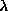

Copyright © 1994, 1996, 1999 Information Geometers Ltd and The University of Bath
Already, in Chapter 1, we have seen that svLis can use cylinders as well as flat surfaces as primitives. In fact, svLis is able to handle a very wide range of primitives with curved surfaces, but let's start with cylinders.
Having looked at the implicit planar half-space inequality at the end of the last chapter, you might imagine that svLis uses the same trick to define a solid cylinder. For example a cylinder of radius 2 parallel to the z-axis and with its axis through the point x = 3, y = 1 would, conventionally, be represented by the inequality:
It is more difficult if the cylinder is not aligned with one of the axes, of course. However, any cylinder could be represented by the general quadric inequality:
If we could be bothered to figure out the right numbers for all the ai values, this equation would also do for ellipsoids, spheres, hyperbolas of revolution, and so on.
However, svLis doesn't use this representation. It uses the planar
basis instead. Consider
the disc shown in Figure 10. This is
a cross-section through the z-axis-aligned cylinder I just mentioned,
and it can be represented by exactly the same inequality:
Suppose we have two normalized perpendicular implicit lines, L1 and L2, that intersect at the disc's centre. Just as with a normalized (half-)plane, the distance of a point from a line is given simply by substituting the point into the expression for the line. Consider point on the disc's circumference. It is d1 away from L1 and d2 away from L2. Pythagoras' theorem says that d12 + d22 - r2 = 0. As (in this case) r = 2, this means that
L12 + L22 - 22 = 0
must be the equation of the disc's circumference, and that
must be the inequality that defines the whole disc, interior and all. In Figure 10, L1 and L2 are the following functions:
However, any two normalized and mutually perpendicular lines that crossed at the disc's centre would do.
This all works just as well in three (or any number of) dimensions as it does in two. To make any cylinder we take two perpendicular planes that intersect at right angles along the cylinder's axis, add their squares, and subtract the square of the radius. If the resulting expression is made less than or equal to zero, this means that:
sv_primitive p_sphere(sv_point centre, sv_real radius)
{
// Three planes through the centre.
sv_primitive xhs = sv_plane(sv_point(1,0,0),centre);
sv_primitive yhs = sv_plane(sv_point(0,1,0),centre);
sv_primitive zhs = sv_plane(sv_point(0,0,1),centre);
// Generate the sphere function.
sv_primitive s = (xhs^2) + (yhs^2) + (zhs^2)
- sv_primitive(radius*radius);
return(s);
}
Next is the function for a cylinder.
Most of this is concerned with the vector algebra (using sv_points)
needed to construct the two perpendicular planes that intersect at the
axis.
sv_primitive p_cylinder(sv_line axis, sv_real radius)
{
sv_point ax_vec = axis.direction;
sv_point center = axis.origin;
// Generate a vector perpendicular to
// the cylinder's axis
// The right function generates an arbitrary vector at right-angles
// to another. sv_point ax_perp_0 = right(ax_vec); // And another perpendicular to both. sv_point ax_perp_1 = ax_perp_0 ^ ax; // Generate two perpendicular planes intersecting // at the axis. sv_primitive hs0 = sv_plane(ax_perp_0, center); sv_primitive hs1 = sv_plane(ax_perp_1, center); // The product of their squares - radius^2 // is the cylinder. sv_primitive c = (hs0^2) + (hs1^2) - sv_primitive(radius*radius); return(c); }Note the brackets needed round
The only differences between those two functions and the actual ones in the svLis library are that the library functions also set internal flags to record the fact that the primitives s and c are special shapes, not just any old quadric, and that the arguments are transferred by reference. Finally in this section, here is a complete list of the simple solid primitives built into svLis:
sv_primitive p_f = sv_primitive(f);
sv_primitive p1 = sv_primitive(f1); sv_primitive p2 = sv_primitive(f2); sv_primitive p3 = sv_primitive(f3); sv_primitive p4 = sv_primitive(f4); sv_primitive laugh_p = 3.2*(p1^2) - 7.8*((p2^3)*p1) + p3*p4 - p1 + 12; sv_set laugh_shape = sv_set(laugh_p); sv_set weird = laugh_shape & funny_previous_set;Heaven knows what sort of shape that would make--it doesn't matter; the point is that this is the basic mechanism in svLis for building curved solids.
How can this be used to solve one of the fundamental requirements of
geometric modelling: that of forming a smooth transition or blend
between two other shapes? Figure 11
illustrates what I mean. In it, two pipes
join at an angle to make an angled T-piece, but the join does not have
a sharp corner. An extra surface has been unioned with the cylinders to
round off the join. Almost all real engineering components need such blends
somewhere to avoid weak sharp corners in dies and moulds, to allow for
machining by round cutters, for casting or moulding, to avoid problems
with fluid flow, or simply to look nice.
The technique for solving this problem was developed in the early 1980s by John Woodwark, Andy Wallis and Alan Middleditch (see the Bibliography for details). It stems from a method for aircraft fuselage design invented by R.A. Liming in 1944.
Suppose we have four linear functions:
When set to 0, these define four lines in the plane (Figure 12).
If we then form a quadratic
(where 
is a constant between 0 and 1), the curve where the quadratic
is zero will pass through the four intersection points of the lines. As
we change the value of
a whole family of quadratics will be generated (some ellipses, some hyperbolas)
that all share this property.
This will work in three dimensions just as well. SvLis can build a quadric primitive that went through the four lines of intersection of those planes f1 to f4 like this:
sv_real lambda = 0.62; // or whatever sv_primitive q = lambda*p1*p2 - (1 - lambda)*p3*p4;The shape that this produced would depend on the orientation of the planes and the value of , but would probably be similar to an elliptical cone. Note, incidentally, that the signs are important, by which I mean that, even though L1 = 0 and -L1 = 0 define the same line, the resulting polynomials will be different.
Suppose now that we bring L3 and L4
together so that they coincide (that is, so that L3 =
L4).
The quadratic Q will now have the property that it passes through
the intersections of L1 and L3, and
of L2 and L3, in such a way that it
is tangential to L1 and L2 at those
points (Figure 13).
Again this will work with planes as well, and the svLis code becomes:
sv_primitive q = lambda*p1*p2 - (1 - lambda)*(p3^2);The quadric q would be tangential to p1 and p2 along the lines where they cut p3. The value of controls the shape of the curve: values close to unity will cause it to go tight into the corner between p1 and p2, values close to zero will cause it to stay close to p3.
How does all this help with the blending problem? The answer lies in
the fact that the tangency property of the Liming formulation is retained
for any polynomials p1, p2, and p3 ;
they don't have to be planes.
;
they don't have to be planes.
Let's look at how the T-piece in Figure 11
was done. The stages are illustrated in Figure 14.
First the two cylinders were
created. Then a cone was created to define where on the cylinders' surfaces
the tangency was to happen. Then a blend surface was made using these three
primitives and the Liming formula. Only part of this blend surface is needed,
of course: the part inside the cone. This is trivial to obtain as all that
needs to be done is to intersect the blend with the cone. Finally the resulting
bit of blend is unioned with the two cylinders to make the blended T-piece.
Here's the code:
// Make the two cylinders. sv_real radius_1 = 1.0; sv_line line_1 = sv_line(sv_point(1,0,0), sv_point(0,0,0)); sv_primitive cyl_1 = p_cylinder(line_1, radius_1); sv_real radius_2 = 0.6; // Note the point for the cone's vertex: sv_line line_2 = sv_line(sv_point(1,0,1), sv_point(4.5,0,4.5)); sv_primitive cyl_2 = p_cylinder(line_2, radius_2); // Now the 17-degree cone that defines the tangency. sv_primitive tan_cone = p_cone(line_2, 17*M_PI/180); // ...what is a radian, anyway? // Now the blend fillet. cout << "Type a lambda value in [0,1]: "; sv_real lambda; cin >> lambda; sv_primitive blend_p = lambda*cyl_1*cyl_2 - (1 - lambda)*(tan_cone^2); // Finally, do the set-theory to chop off the unwanted // bits of blend and to union the lot together. sv_set blend = sv_set(blend_p) & sv_set(tan_cone); sv_set raw_pipes = sv_set(cyl_1) | sv_set(cyl_2); sv_set t_piece = raw_pipes | blend;This is a bit of a cheat, as the `pipes' don't have holes down them. To get more useful sorts of pipe you'd have to make a cavity inside as well, of course. Also, I haven't included the code that intersects the pipes with half-planes to give their flat ends, and to make cyl_2 stop part-way through cyl_1 so that it doesn't stick out on the other side.
As the axis of the smaller cylinder is the same line as the cone's axis, the point for the cone's vertex needs to be the origin of that line. Because the cylinders and the cone are quadrics (that is, they have polynomial degree 2), the blend polynomial blend_p has degree 4. This method of making fillets and smooth transitions is very versatile, because it starts with polynomials and produces polynomials. Thus it is possible to use it to make blends on blends. The only problem with this is that the degree of the blend polynomials rises rapidly, and can make the results intractable. However, this will only happen with quite esoteric models. For most ordinary solid objects, the technique is neat, quick, and convenient.
The effect of varying the value of
is shown in Figure 15.
The Liming blending scheme can be used to smooth out any corner. However, many objects that svLis is required to model need another sort of blend as well. Consider the transition from the body to the neck of a bottle. This is tangentially smooth where it joins the base surfaces, and goes from a large diameter to a smaller one. This kind of blend, a sort of varying-section tube or duct for connecting two objects that are (roughly) in-line, is the other kind that's needed. SvLis' solution to this problem was devised by Dayong Zhang.
Figure 16 is rather similar to
Figure 13, except that here we generate
a cubic, C, that is tangential to L1 where L3
crosses it, and tangential to L2 where L4
crosses it.
C has the form .As you might expect, a cubic is needed because in general such blends need to have inflections in them. As with the Liming blend, the underlying shapes Li don't need to be linear polynomials. They can be polynomials of higher degree, or indeed can contain sines, exponentials, and so on (see the next section). Again, as with the Liming blend, the primitives that define where the blend is tangential to the base surfaces (L3 and L4) can also be used set-theoretically to chop the blend curve or surface to size to create the solid required.
Here is some code that takes two non-coaxial cylinders and constructs a smooth transition from one to the other. The transition tangencies are deliberately set to be non-perpendicular to the cylinder axes in order to demonstrate the versatility of the technique.
sv_real lambda = 0.4; sv_line axis_1 = sv_line(sv_point(1,0,0), sv_point(0,0,0)); sv_line axis_2 = sv_line(sv_point(1,1,0), sv_point(0,0,0.2)); sv_primitive l_1 = p_cylinder(axis 1, 1.0); sv_primitive l_2 = p_cylinder(axis 2, 0.5); sv_primitive l_3 = sv_plane(sv_point(1,0.3,-0.2), sv_point(-1,0,0)); sv_primitive l_4 = sv_plane(sv_point(-1,-1,0.25), sv_point(1,1,0.2)); sv_primitive c = sv_primitive(1 - lambda)*l_1*(l_4^2) + sv_primitive(lambda)*l_2*(l_3^2); sv_set s_3 = sv_set(l_3); sv_set s_4 = sv_set(l_4); // Intersection with s_3 and s_4 chops cylinders // in the right place. sv_set result = (sv_set(l_1) & s_3) | (sv_set(l_2) & s_4); // Trim the blend and union it in. result = result | (sv_set(c) - s_3 - s_4);Figure 17 shows the resulting shape.
In addition to doing arithmetic on planes to make complicated shapes, svLis will also allow you to use other functions. For example you can take the sine of a primitive:
// Plane through the origin // perpendicular to the x axis: sv_primitive xp = sv_primitive( sv_plane(sv_point(1,0,0), sv_point(0,0,0)) ); // The potential function of xp is just x. // So, to get sin(x).... sv_primitive sx = sin(xp); // If we add sin(xp) to a plane perpendicular to z, // we'll get a wavy sheet: sv_primitive zp = sv_primitive( sv_plane(sv_point(0,0,1), sv_point(0,0,0)) ); sv_primitive wave = zp + sx; // ....
You could compress a lot of that code; I've written it out step
by step for clarity. Figure 18 shows
the shape that results. The primitive zp has a potential that
is the same as the value of z everywhere; sx is the same
as
everywhere. The effect of adding them is to make the surface of zp
(where z is 0) undulate, because now the zero locations are wherever .
You can play lots of tricks like this. Experiment! The functions you have available are sin, cos and exp. You'll note that there is no log , nor tan. Logarithms and tangents both behave very nastily for quite sensible arguments, like negative ones or ones close to . SvLis would have to be riddled with special-case code to deal with these functions.
There is a further function available: the signed square root , s_sqrt. An ordinary square root would give imaginary answers (or errors) for the solid (negative) region of a primitive, of course, and so would not be a lot of use. The function s_sqrt applies the sign of a value to the square-root of the absolute value. This retains the idea of solid, surface, and air for primitives, but allows you to square-root their potential function. If you do this for spheres and cylinders, you will see that the potential function that you end up with will now return real tape-measure distance just as the potential function of a plane does. Also, given the ubiquitous nature of Pythagoras' theorem, you will find that--when you build your own primitives using arithmetic on planes and other primitives--their potential functions will often also be squared distance (or distance to the fourth power, or whatever); using s_sqrt can help you to linearize their potentials. As we shall see in the next chapter, there are functions available which will tell you the nearest primitive to a point in a model, measuring distance in terms of potential value. If the potentials are all real distances, this makes it easier to find the nearest surface, which is often a useful thing to know.
Finally in this section, there is a sign
function that returns +1 or -1 depending upon the sign of the primitive
for which it is called. Note that this does not return 0 on the surface
of a primitive, it returns -1.
We have just seen how primitives have potential functions which are
positive for air, zero for surface, and negative for solid. Clearly a sheet
has no solid--it's just surface and air, or zero and positive. SvLis achieves
this by providing you with an absolute-value function
that you can apply to a primitive. The result is a primitive that has no
solid side; it is just surface and air. For example, suppose we have an
ordinary solid sphere s, and the sinusoidal solid primitive wave
from Page  .
We could turn the wave into a sheet, make it into a set, and union it with
the sphere:
.
We could turn the wave into a sheet, make it into a set, and union it with
the sphere:
wave = abs(wave); sv_set w_sph = sv_set(wave) | s;
Figure 19 shows the result, and also the result of doing a difference rather than a union. In this way you can cut holes in sheets, limit their boundaries with intersections, and treat them as sets just like a solid primitive.
What about wires? Well, to get a curving line in
space, you just intersect two sheets. The result may be more than one curve,
of course (think of a small cylindrical sheet cutting a big one, for example),
but you can chop them about by differencing and intersecting solids with
them, just as with sheets. Figure 20
shows two such sheet cylinders that have had a solid cuboid subtracted
from where they cross (so you can see what's going on) and have then had
their intersection unioned in to show the curved wires where they cross
each other. Here is the code :
:
sv_line axis_1 = sv_line(sv_point(1,0,0), sv_point(0,0,0)); sv_line axis_2 = sv_line(sv_point(0,1,0), sv_point(0,0,0)); sv_point corner = sv_point(1.1, 1.1, 1.1); sv_set cyl_1 = thin_cylinder(axis_1, 1.0); sv_set cyl_2 = thin_cylinder(axis_2, 0.8); sv_set middle = cuboid(-corner, corner); sv_set object = ((cyl_1 | cyl_2) - middle) | (cyl_1 & cyl_2); sv_model m = sv_model(object, sv_box(-2*corner, 2*corner)); m = m.facet(); plot_m_p_gons(m); // ....
When you use svLis you hardly ever have to mess around with pointers to complicated classes like primitives, nor do you have to worry about storage allocation and de-allocation. SvLis handles all this for you in a very efficient way.
The trick is the standard one of reference counting. The svLis implementation is extremely elegant but unfortunately I can claim almost no credit for it as I nicked it from Scott Meyers' excellent book--see the Bibliography. First we have to define a smart pointer--that is a pointer that knows when it gets copied. We'll need this to point to several different classes, so this is done as a template in the file sv_b_cls.h:
template <class T>
class sv_smart_ptr
{
private:
T *Pointee;
void init() { if (Pointee) Pointee->add_reference(); }
public:
sv_smart_ptr(T* realPtr = 0)
{
Pointee = realPtr;
init();
}
sv_smart_ptr(const sv_smart_ptr& rhs)
{
Pointee = rhs.Pointee;
init();
}
~sv_smart_ptr() { if (Pointee) Pointee->remove_reference(); }
sv_smart_ptr& operator=(const sv_smart_ptr& rhs)
{
if (Pointee != rhs.Pointee)
{
if (Pointee) Pointee->remove_reference();
Pointee = rhs.Pointee;
init();
}
return *this;
}
int exists() const { return(Pointee != 0); }
long unique() const { return((long) Pointee); }
T* operator->() const { return(Pointee); }
T& operator*() const { return(*Pointee); }
};
The class T has to provide two procedures: add_reference()
and
remove_reference().
In practice T will be a derived class for each svLis object (primitives
in the example to follow); a class derived from the base
class that handles the reference counting. The base class is called sv_refct,
also
defined in sv_b_cls.h:
class sv_refct
{
protected:
sv_integer ref_count; // The reference count
sv_refct()
{
ref_count = 0;
}
sv_refct(const sv_refct& rhs)
{
ref_count = 0;
}
sv_refct& operator=(const sv_refct& rhs) { return *this; }
virtual ~sv_refct() {}
public:
void add_reference()
{
++ref_count;
}
virtual void remove_reference()
{
if (--ref_count <= 0) delete this;
}
};
As
can be seen, add_reference() just increments the reference count.
Whenever any complicated svLis class like primitives gets copied the data
stays in one place, only a pointer is copied, and the number of pointers
pointing to the data is recorded in ref_count. When an item is
deleted (for example when it goes out of scope) the reference count is
decremented. Only when the reference count goes through 0 (and so nothing
is pointing at the data) does the data actually get deleted.
Finally, here is the primitive class using the above two definitions. It has an internally defined struct called prim_data containing the actual data that is the thing pointed to, and a pointer to that struct that is all the information that individual primitives hold.
class sv_primitive
{
private:
// struct containing the actual data derived
// from the reference-counting base class
struct prim_data : public sv_refct
{
friend class sv_smart_ptr<prim_data>;
sv_integer kind; // Indicates if this is a plane, real or compound
sv_plane flat; // Arithmetic is done on planes...
sv_real r; // ...and reals
prim_op op; // If compound, this says +, -, *, /, ^, or one of the monadics
sv_integer degree; // Highest power (trancendentals add one)
sv_primitive *child_1; // Children if compound
sv_primitive *child_2;
sv_primitive *grad_x; // The grad vector of the primitive
sv_primitive *grad_y;
sv_primitive *grad_z;
~prim_data() { delete child_1; delete child_2; delete grad_x; delete grad_y; delete grad_z; }
// Make a single-plane primitive
prim_data(const sv_plane& a)
{
kind = SV_PLANE;
flat = a;
degree = 1;
op = SV_ZERO;
child_1 = new sv_primitive();
child_2 = new sv_primitive();
grad_x = new sv_primitive(); // Grads are done by lazy evaluation
grad_y = new sv_primitive();
grad_z = new sv_primitive();
}
// Make a single-real primitive
prim_data(sv_real a)
{
// ... see prim.h
}
// Build a compound primitive from two others and a diadic operator
prim_data(const sv_primitive& a, const sv_primitive& b, prim_op optr)
{
// ... see prim.h
} }; // prim_data
// This is the pointer that gets ref counted - the only data stored in sv_primitive sv_smart_ptr<prim_data> prim_info;
public:
// Null primitive
sv_primitive() { }
// Make one from a plane or a real
sv_primitive(const sv_plane& a) { prim_info = new prim_data(a); }
sv_primitive(sv_real a) { prim_info = new prim_data(a); }
// Build one primitive from another; assignment automatically increments ref_count
sv_primitive(const sv_primitive& a) { *this = a; }
// Test for an undefined primitive
int exists() const { return(prim_info.exists()); }
// Functions to return the hidden data
sv_plane plane() const { return(prim_info->flat); }
sv_real real() const { return(prim_info->r); }
sv_integer kind() const { return(prim_info->kind); }
prim_op op() const { return(prim_info->op); }
sv_integer degree() const { return(prim_info->degree); }
sv_primitive child_1() const { return(*(prim_info->child_1)); }
sv_primitive child_2() const { return(*(prim_info->child_2)); }
// The following are in prim.cxx
sv_primitive grad_x() const; sv_primitive grad_y() const; sv_primitive grad_z() const; // Unique tag sv_integer tag() const; // The 5 arithmetic operations friend sv_primitive operator+(const sv_primitive&, const sv_primitive&); friend sv_primitive operator-(const sv_primitive&, const sv_primitive&); friend sv_primitive operator*(const sv_primitive&, const sv_primitive&); friend sv_primitive operator/(const sv_primitive&, const sv_primitive&); friend sv_primitive operator^(const sv_primitive&, const sv_primitive&); // ...and a whole load of other member functions for which you'll have to see
// the real file in prim.h...
};This reference-counting trick is used throughout svLis: not only for primitives, but also for sets, models, attributes and all sorts of other things that I haven't introduced yet.
There are two principal advantages to it.
Firstly, you--the user--can just assign things, return them from functions, incorporate them in other things and so on by referring to variables of the appropriate class in a natural a = b + c sort of way even if b and c take up five megabytes each. SvLis will handle all this efficiently without copying loads of data.
The second advantage is that everything that you build in svLis exists in only one place; there are no multiple copies. This makes the efficient implementation of things like undo (or rollback) functions trivial; if, for example, you union two enormously complicated sets, then decide that you didn't want to do that, you can just extract the originals like this:
sv_set a = fancy_set(1.345); sv_set b = fancy_set(-3.812); a = a | b; // Oops! Let's undo that and get a back (b is OK): if(a.child_1() == b) a = a.child_2(); else a = a.child_1();This code
Adrian Bowyer